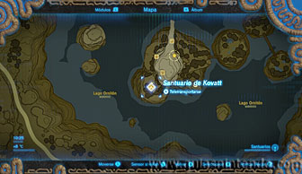
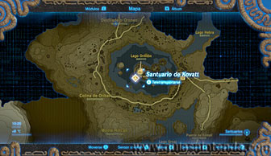
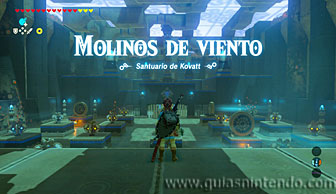
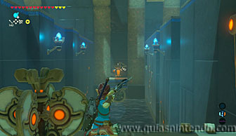
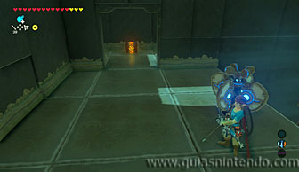
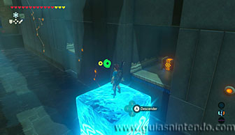
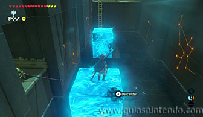
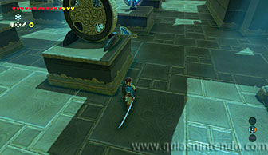
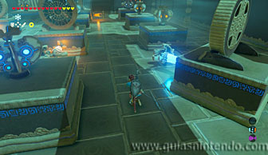
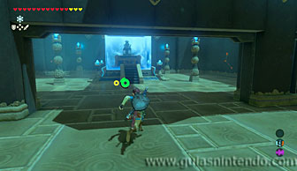

Puedes acceder a este santuario desde que llegas a la región de la torre de Tabanta. Está muy cerca del Poblado orni.

Una vez dentro verás una serie de ventiladores e interruptores con forma de molinillo. Si mueves los ventiladores para colocarlos en la posición correcta, activarán todos los interruptores con forma de molinillo y abrirás el camino al altar.

Antes de eso puedes conseguir tres cofres, para ello ve a la derecha según entras y encontrarás una zona de agua junto a un interruptor con forma de molinillo y unas rejas que cubren un cofre. Debes disparar una flecha al interruptor que hay al otro extremo de la zona de agua y así el ventilador activará el interruptor con forma de molinillo y abrirá la reja (dentro del cofre hay un Núcleo ancestral).

Después tendrás que crear dos bloques de hielo en el agua, justo delante de los dos huecos que hay en la pared derecha para poder alcanzar los cofres que hay dentro de ellos (que contienen un zafiro y una lanza de plumas).

Regresa a la sala principal y ahora tendrás que golpear todos los interruptores una vez para que se muevan en la dirección que indican. Además, los dos que están en el lado izquierdo deben ser golpeados dos veces más (en total tres veces cada uno). Así conseguirás que todos los interruptores en forma de molinillo estén en funcionamiento gracias a los ventiladores y la puerta del altar se abrirá.

Ahora solo debes dirigirte al altar para conseguir el símbolo de valía correspondiente.